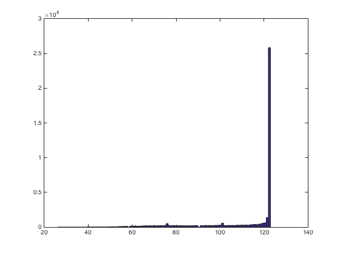
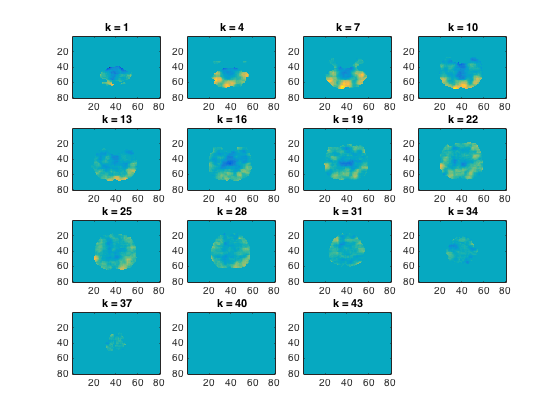

Volumetric fMRI Searchlight
- For CoSMoMVPA's copyright information and license terms, #
- see the COPYING file distributed with CoSMoMVPA. #
Contents
Load data
config=cosmo_config();
data_path=fullfile(config.tutorial_data_path,'ak6','s01');
output_data_path=config.output_data_path;
half1_fn=fullfile(data_path,'glm_T_stats_odd.nii');
half2_fn=fullfile(data_path,'glm_T_stats_even.nii');
mask_fn=fullfile(data_path, 'brain_mask.nii');
half1_ds=cosmo_fmri_dataset(half1_fn,'mask',mask_fn,...
'targets',(1:6)',...
'chunks',repmat(1,6,1));
half2_ds=cosmo_fmri_dataset(half2_fn,'mask',mask_fn,...
'targets',(1:6)',...
'chunks',repmat(2,6,1));
ds=cosmo_stack({half1_ds,half2_ds});
ds=cosmo_remove_useless_data(ds);
Define spherical neighborhood for each feature (voxel)
radius=3;
nbrhood=cosmo_spherical_neighborhood(ds,'radius',radius);
roi_sizes=cellfun(@numel,nbrhood.neighbors);
hist(roi_sizes,100)
+00:00:09 [####################] -00:00:00 mean size 111.5

Run a searchlight with the cosmo_correlation_measure
ds_corr=cosmo_searchlight(ds,nbrhood,@cosmo_correlation_measure);
+00:00:42 [####################] -00:00:00
Visualize and store the results in a NIFTI file
cosmo_plot_slices(ds_corr)
output_fn=fullfile(output_data_path,...
sprintf('splithalf_correlation_searchlight_r%.0f.nii',radius));
cosmo_map2fmri(ds_corr, output_fn);
